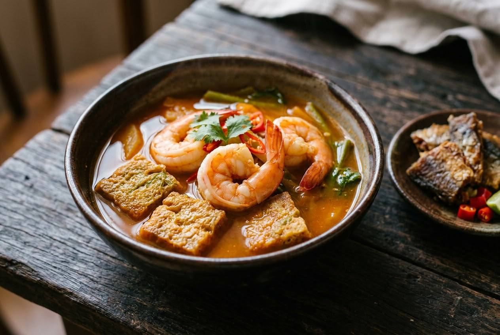

Prawn meat pounded into the chilli paste, tamarind and lime in the same pot, prawns curled to a C and no further. The name means "sour curry" — there is no orange in it.

แกงส้ม means "sour curry" — and the joke writes itself, because there is no orange anywhere near it. A Lemon8 recipe is literally titled "gaeng som with no orange in it." What the name promises is exactly what the dish delivers: sour leads, salt follows, sweet only rounds the edges.
Gaeng som is also two curries under one name. The south's version is built on a yellow paste — dried chillies, fresh turmeric, garlic, shrimp paste — and comes out fierce and hot-sour. The central version swaps the turmeric for lemongrass and krachai, runs redder, and usually rides with a cha-om omelette simmered in the broth. Both share the trick that makes the dish: protein pounded into the paste. As one home cook puts it, "pounding the meat into the paste is the heart of the dish" — it's the thickener, and the flavour.
| Thai | English | Amount |
|---|---|---|
| พริกแห้ง (แช่น้ำ) | Dried chillies, soaked soft | 10–15 |
| เกลือ | Salt | 1 tsp |
| ตะไคร้ (ซอย) | Lemongrass, sliced fine | 1 stalk |
| กระชาย (ซอย) | Krachai, sliced | 3 pieces |
| หอมแดง | Shallots | 3 |
| กะปิแท้ | Shrimp paste | ½ tbsp |
| เนื้อกุ้งลวก | Blanched prawn meat — for the paste | 100 g |
| กุ้งสด | Fresh prawns, peeled and deveined | 300 g |
| ชะอม (ยอดอ่อน) | Cha-om, young tips | 1 big handful |
| ไข่ไก่ | Eggs — for the omelette | 3–4 |
| น้ำมะขามเปียก | Tamarind water | 3–4 tbsp |
| น้ำปลา | Fish sauce | 2 tbsp |
| น้ำตาลปี๊บ | Palm sugar | 1 tbsp |
| มะนาว | Lime — squeezed at the end | 1 |
| ปลาเค็มทอด | Fried salted fish, to serve | as liked |
Dried jinda chillies 30 (or fresh bird's eye), Thai garlic 30 cloves, fresh turmeric 1 piece (about 2 inches), shrimp paste 1 tbsp, salt 1 tsp.
Pound the chillies with salt until broken, add the turmeric and garlic, pound fine, then work in the shrimp paste until smooth. No lemongrass, no krachai — turmeric is the whole character. The southern curry runs hotter and sharper; fish and vegetables go in by season and by fridge.
Both pastes keep in the fridge for days — and the southern one is worth making double of.
South vs centre. The south's turmeric-yellow paste against the centre's lemongrass-krachai red one. Both are gaeng som; neither is the "wrong" one — the recipe changes at the border.
The sour. Tamarind alone, or tamarind plus a lime squeeze at the end. The two-sour finish is the modern standard; purists stay with tamarind.
The protein. Prawns, fish, or both — and whether the omelette belongs in the pot at all. Fish versions skip the cha-om entirely.
Heat. Southern versions run genuinely hot; central versions are friendlier. Adjust by your chillies, not by apologising.
What it's eaten with. Jasmine rice is standard; over khanom jeen rice noodles is the southern habit; fried salted fish on the side is non-negotiable everywhere.
This recipe is translated from the following Thai-language sources. Where they disagree, we've said so.
1. Pantip thread 44032467 — "วิธีทำ แกงส้มชะอมกุ้ง สูตรน้ำแกงเข้มข้น รสนัวกลมกล่อม" (central version, full method and tips) — pantip.com
2. Wongnai (สไตล์ของแม่) — "พริกแกงเหลือง (แกงส้มใต้)" (southern yellow paste, from a Nakhon Si Thammarat teacher) — wongnai.com
3. Pantip thread 38943025 — "แกงส้มกุ้งชะอมไข่ม้วนสูตรเครื่องแกงใต้" (southern paste with egg roll) — pantip.com
4. TrueID (22 Aug 2022) — "แจกสูตร วิธีทำ น้ำแกงส้ม สูตรทำขาย" (shop concentrate method) — food.trueid.net